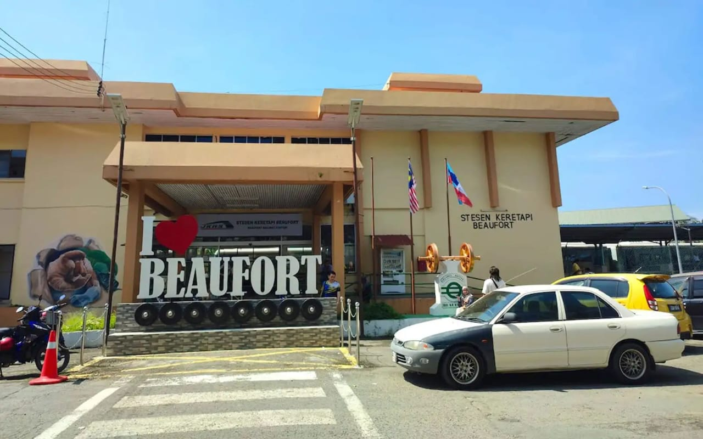

Welcome to My Journey, Heritage & Passions
An interactive multipage web showcase created by Freadenly Zulkilfi (Fread). Exploring my academic pathway in Business Computing at UMSKAL, the rich heritage of my hometown Beaufort, Sabah, and the creative hobbies that inspire my digital drive.

Historic Railway & Padas River
FKI @ UMSKAL (HC13)
Explore The Four Dedicated Pages
Organized into standalone sections, each built to highlight core aspects of my personal profile, cultural roots, and creative passions.
About You
Get to know Freadenly Zulkilfi, my background in Bachelor of IT (Business Computing) at UMSKAL, competencies, and digital aspirations.
Read Bio & Profile →Your Hometown: Beaufort
Discover Beaufort, Sabah, famed for the historic Sabah State Railway, mouth watering Beaufort Mee, Padas white water rafting, and Klias wetlands.
Explore Beaufort →Interests & Hobbies
Explore what fuels my digital energy: competitive gaming, web coding, and creative video & graphic editing.
Discover Hobbies →